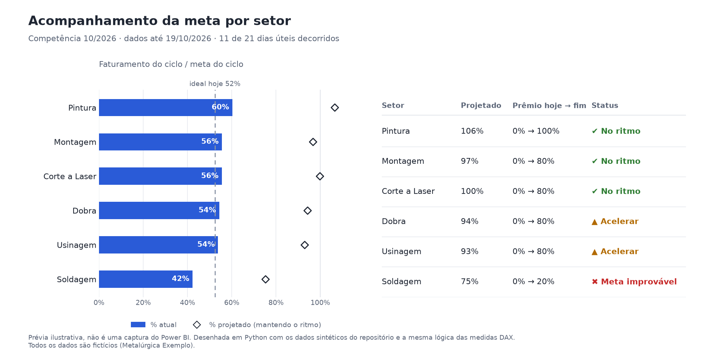

Power BI · DAX · TMDL
Dashboard de Produção e Meta por Setor
Modelo estrela com 45 medidas DAX documentadas: ritmo diário, projeção de fim de mês, faixas de prêmio por eficiência, fila de ordens de produção e mix de produtos. Dados 100% sintéticos, de uma metalúrgica fictícia.
Power BIDAXPower QueryTMDLPython
Ver no GitHub →
